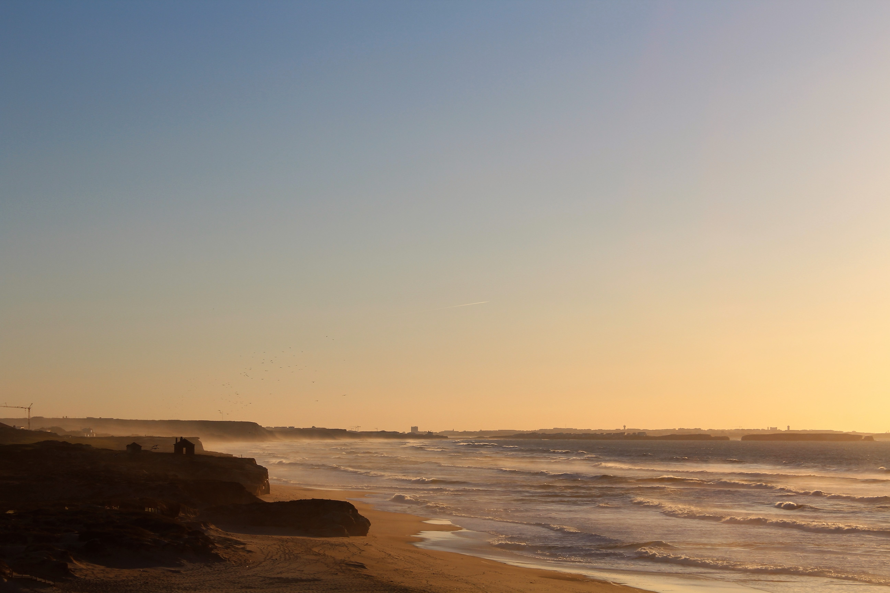
About
Discover the Silver Coast
Stretching along the Atlantic between Lisbon and Porto, the Silver Coast — Costa de Prata — is one of Portugal's best-kept secrets. Think wild beaches, crashing waves, medieval hilltop towns, and vineyards that tumble down to the sea.
Anchored by towns like Peniche, Óbidos, and Bombarral, this region offers world-class surf, championship golf, outstanding seafood, and the kind of unhurried Portuguese life that is increasingly hard to find.
Surfing
Ride the Atlantic waves

Baleal — Portugal's surf capital of the centre
The peninsula of Baleal, just north of Peniche, is legendary among surfers. Its unique geography means there is always a rideable wave no matter the swell direction — perfect for beginners and experienced surfers alike.
Supertubos
A short drive south, Supertubos regularly hosts the WSL World Surf League Championship Tour. The hollow, powerful barrels here are considered among the best beach-break waves in Europe.
Surf schools
Dozens of surf schools operate along the coast. Whether you've never stood on a board or you're refining your cutbacks, you'll find the right school and the right wave here.
Golf
Championship courses with ocean views
The Silver Coast is home to several world-ranked golf courses, all within easy reach of the coast. The mild Atlantic climate means you can play year-round, and the scenery — rolling pines, clifftops, and ocean panoramas — is hard to beat.
Royal Óbidos
Designed by Seve Ballesteros, this stunning course weaves through the Bom Sucesso resort with views across the Óbidos Lagoon.
West Cliffs
Ranked among the top courses in Europe, West Cliffs sits dramatically above the Atlantic — ocean views from almost every hole.
Praia d'El Rey
A links-style course right on the beach. The back nine runs alongside the dunes, with the Atlantic as your permanent backdrop.
Bom Sucesso
A beautiful parkland course in the Óbidos resort area, suitable for all levels and surrounded by pine forests.
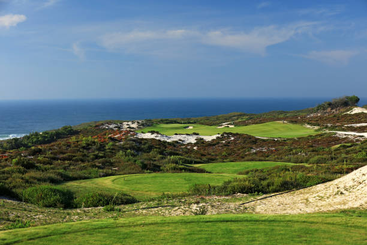
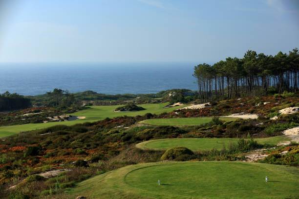
Restaurants
Where to eat on the Silver Coast
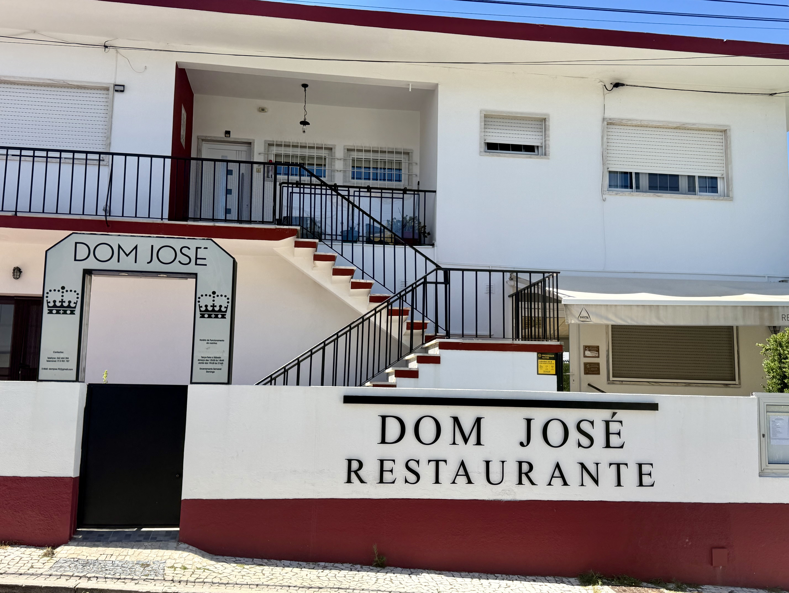
Restaurante Dom José
Bombarral
A true institution in Bombarral. Located in the heart of Bombarral, Dom José is a welcoming restaurant that combines traditional Portuguese cuisine with attentive service. Ideal for those seeking authentic flavors in a family atmosphere.
Learn more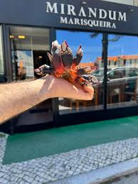
Marisqueira Mirandum
Peniche
At Mirandum, the seafood is always very good, the service is attentive, and the prices are very reasonable. The seafood platter is the most popular dish, but it's also worth trying the clams à Bulhão Pato.
Learn moreSushi Fish Baleal
Óbidos
The fish comes directly from the Peniche dock. Our sushi chefs are versatile and creative. Our staff is attentive, friendly and dedicated and our space is welcoming and comfortable. In the Sushi fish menu you will find the classic tartar, temakis, tempuras, nigiris, gunkans and gyozas, as well as the combinations that mix sushi and sashimi. But there's more! The crepe roll, the ajitataki or the usuzuruki of white fish are some of the signature dishes of the house.
Learn moreBars
Where to have a drink
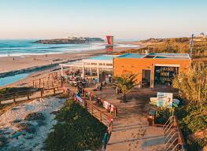
Bar do Bruno
What I like about it
A Silver Coast legend. Bar do Bruno has the kind of easy, relaxed energy that makes one drink turn into three. Great local wines, cold beers, and Bruno himself is usually behind the bar making everyone feel at home.
Learn more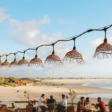
Tribo Da Praia
What I like about it
Tribo da Praia is much more than just a bar its an emblematic meeting point on Baleal Beach in Peniche Super Bock in hand. Relaxed surf vibes all evening long. Located on one of Portugals most beautiful beaches, Tribo da Praia is the ideal place to Socialize, Share, Feel, and Celebrate LIFE!
Learn more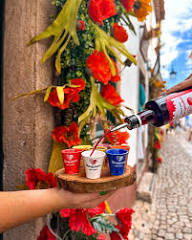
Mariquinhas
What I like about it
Sip regional wines inside a 14th-century wall. The famous Óbidos ginjinha Mariquinhas (cherry liqueur served in a chocolate cup) is a must — at least once.
Learn more📸 Gallery 📸
📸 Photos of the Silver Coast 📸
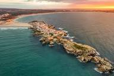
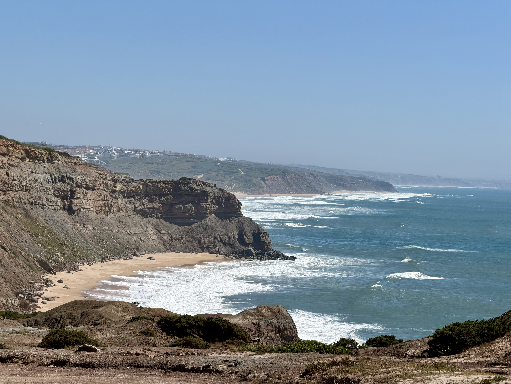
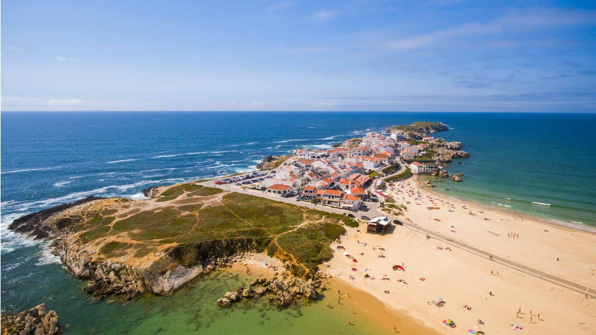
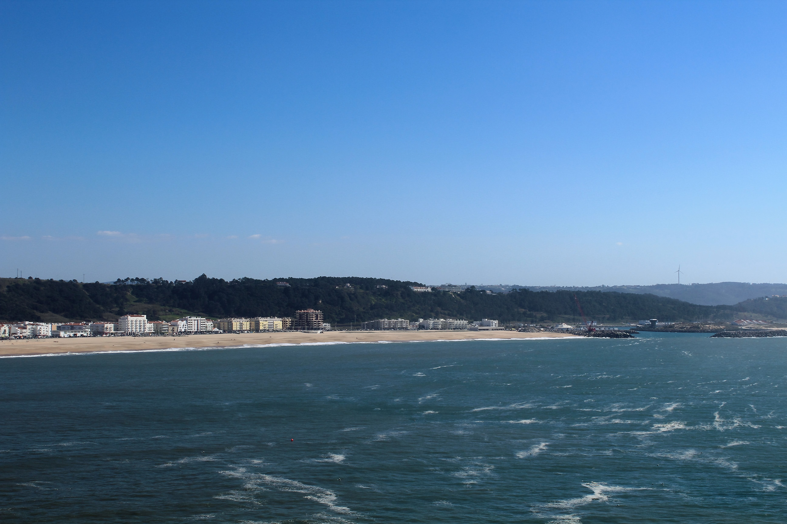